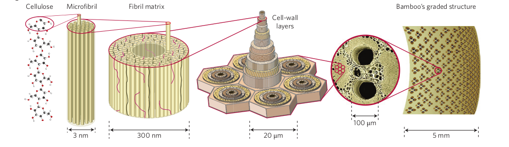

Natural Materials
- Large variety of materials with unique properties. Built with relatively limited number of components (e.g. polymers and ceramics).
- Complex hierarchical structures that encompass multiple length scales (nano, micro, macro, etc.).
- "Whole is greater than the sum of its parts"
- Local optimums for biological functions and constraints. Evolution tailored architecture for many uses.
- Combine stiff and soft components. Layered, columnar, or fibrous motifs. Distinct layers with different motifs. Porous, gradients of density.
- Many capable of self-repair.
- Difficult to synthesize, unclear if possible to produce at mass-scales for human use.
Engineered materials
- Developed through formulation and synthesis of new compounds.
- Structural control at micrometer scale, with nanoscale on the horizon.
- Most advances occured through trail-and-error or lucky accidents.
The challenge is to mimic natural material's complex architectures. Unlike biological mechanisms, human engineering is not limited by materials, structures, etc. Potentially endless possibilities.

Wegst, U., Bai, H., Saiz, E. et al. Bioinspired structural materials. Nature Mater 14, 23–36 (2015). https://doi.org/10.1038/nmat4089